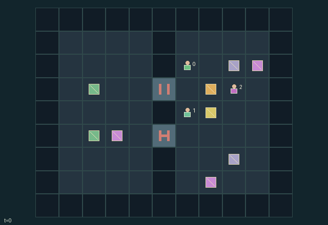

GI161 · Tetherwake

Recover each salvage module at its assigned western dock while choosing when to help, anchor, recharge or collect personal chips.
Identity and original contract
3 independently actionable roles; 14 discrete commands per role; 210 native observation columns per role; original horizon 160 steps. Declared per-step reward range: -1 to 3. Observation regime: fully_observable.
Source SHA-256: f58a6fc02ef1f4542e3bd11b49c1914cdcb401f41f51f6e198b518df8cef4b87
The objective, rewards, population, map and horizon remain original. A preview is not a success claim.
Objective and gameplay
Recover each salvage module at its assigned western dock while choosing when to help, anchor, recharge or collect personal chips.
All crew-to-cargo cables constrain walking and pulling. A powered pull needs the drive operator and another matching vote, consumes shared power, and must respect every attached cable and anchor. Drift can consume common power or snap teammates cables.
- Rigger cables reach three cells, the other two reach two. An attached crew member may walk only while its cable remains within that Manhattan length.
- A cargo pull needs matching directions from at least two attached crew including the drive operator. It costs two shared power and obeys every crew cable and anchor.
- The rigger can pin nearby cargo to a bollard with a length-three anchor cable, or detach it. Anchored cargo does not drift.
- Every third transition, unanchored cargo without a successful pull tries to drift east. A taut crew cable blocks it for one shared power; with no power the affected cargo cables snap.
- Top and bottom gates alternate in four-tick blocks. Occupied gates remain open. The technician can spend three power to hold a nearby gate open for three ticks.
- The technician recharges four shared power near the charger. Personal chips give their collector a reward and contribute two shared power, creating an assistance-versus-detour choice.
- Starting occupied destinations and simultaneous agent destination conflicts block walking. Cargo requests and drift resolve in cargo index order.
- Reach both assigned recovery docks for natural completion. True endpoint pairs and displacement vectors bind the real tether network; no simulated physics or invented replay is included.
Ending: Both modules delivered. Otherwise bounded horizon of one hundred sixty transitions; low power alone is recoverable and is not declared failure.
What this game explores
Resource commons & externalities: An action changes a persistent resource or burden that another role also encounters. Compare extraction with maintenance and record the downstream resource trajectory.
Commitment, exchange & governance: Promises consume time, liquidity, access or material. Separate an announced agreement from a binding commitment and from its eventual delivery; log cancellation and expiry too.
Joint transport & shared access: Positions, load geometry, occupancy and persistent access constrain whose action can succeed next. Distinguish physical handoff, shared controls and simultaneous force from a cosmetic cooperation label.
These are questions supported by rule structure, not observed learning effects.
Play it: operating walkthrough
crucibles play --game gi161Keep Python running and open its printed address. Select this game, set a seed and press Create session. The game itself is always English.
Assign a role range to Host with Assign / take over, or Assign all roles. Invite a second participant with Create player invitation, then assign a disjoint subset. Every original role is available.
For every owned role choose a legal command and press Queue. Arrow keys / WASD queue a declared directional action for the current role camera when available. Space or Advance one joint step advances everyone together. Non-directional games use the selectors.
Unqueued roles use the labelled untrained uniform-legal policy. Take over or release roles before the next step without resetting. Full-state debug is privileged and permanently logged; role cameras preserve permissions. Close the session to retain logs. Server restart does not restore sessions.
Complete command reference
IDs and English labels exactly match the manifest. Availability depends on role, resources, location and phase. An available action can still have no productive effect.
0·Wait
1·North
2·East
3·South
4·West
5·Attach nearest reachable cargo or detach current cable
6·Vote pull north
7·Vote pull east
8·Vote pull south
9·Vote pull west
10·Technician hold nearest gate open for three ticks
11·Technician recharge four shared power at charger
12·Collect nearby personal salvage chip and add two shared power
13·Rigger toggle nearest cargo anchor
Roles and capability identifiers
These original role names describe capabilities, not interchangeable skins. Check each owned role's legal selector before planning handoffs.
agent_0·Rigger: long cable and anchor tool
agent_1·Drive operator: required for powered pulls
agent_2·Technician: gate override and recharge
Information and observation permissions
Fully observable public map, crews, cargo, power, gate phase, all actual cable starts/vectors and paired endpoints. All active entities are visible to every role. Endpoint positions are exact derived state from the same constraints used by movement.
The GIF is full-state debug and may reveal hidden entities or private state. Train on obs[agent], not the picture, state tree or another role's private row. Field slices and visibility are in the original manifest.
Reinforcement-learning integration
import jax
from crucibles_jaxmarl import make
env = make("gi161")
key = jax.random.PRNGKey(0)
key, rk, ak, sk = jax.random.split(key, 4)
obs, state = jax.jit(env.reset)(rk)
actions = env.sample_actions(ak, state)
obs, state, rewards, dones, info = jax.jit(env.step_env)(sk, state, actions)
done = dones["__all__"]Observations are float32 vectors of width 210; actions are scalar int32; masks have 14 entries. Supply all 3 roles each transition. Masked sampling is an engineering reference, not a trained learner.
step_env retains terminal data without reset. step performs outer autoreset and keeps terminal data in info["raw_state"] and info["raw_observation"]. Use dones["__all__"] for episode boundaries; separate completion, failure and time limit in analysis.
JIT or vmap equal identities and shapes. Split independent reset, policy and transition keys. Group different shapes explicitly; do not shrink the population or horizon. Host rendering stays outside training.
Training questions and fair evaluation
Define valid completion from the objective before fitting. Preserve original rewards and also report real deliveries/services, losses, resource state, unresolved episodes and per-role returns. Animation is not a reward signal.
An action changes a persistent resource or burden that another role also encounters. Compare extraction with maintenance and record the downstream resource trajectory.
Promises consume time, liquidity, access or material. Separate an announced agreement from a binding commitment and from its eventual delivery; log cancellation and expiry too.
Positions, load geometry, occupancy and persistent access constrain whose action can succeed next. Distinguish physical handoff, shared controls and simultaneous force from a cosmetic cooperation label.
Compare memory, communication or centralized critics under matched actor information. Declare critic access; keep actor inputs role-filtered. Match partner/opponent distributions, masks, compute and checkpoint selection. Final tests never enter fitting or selection.
Independent training runs or source-pairing blocks are inferential units; episodes from one policy are not independent training replications. Save hashes, keys, versions, device, time and cost. Negative, zero, failed and indeterminate outcomes are valid. No trained checkpoint or target score is supplied.
Classification and evidence
Overlapping editorial labels are reading aids, not proof of novelty, difficulty, strategic equivalence or learning effects.
- Resource commons & externalities
- Evidence
manifest.task.objective: Recover each salvage module at its assigned western dock while choosing when to help, anchor, recharge or collect personal chips.
- Commitment, exchange & governance
- Evidence
manifest.task.interaction: All crew-to-cargo cables constrain walking and pulling. A powered pull needs the drive operator and another matching vote, consumes shared power, and must respect every attached cable and anchor. Drift can consume common power or snap teammates cables.
- Evidence
manifest.actions.6: Vote pull north
- Evidence
manifest.actions.7: Vote pull east
- Joint transport & shared access
- Evidence
manifest.task.interaction: All crew-to-cargo cables constrain walking and pulling. A powered pull needs the drive operator and another matching vote, consumes shared power, and must respect every attached cable and anchor. Drift can consume common power or snap teammates cables.
- Evidence
manifest.task.observation_access: Fully observable public map, crews, cargo, power, gate phase, all actual cable starts/vectors and paired endpoints. All active entities are visible to every role. Endpoint positions are exact derived state from the same constraints used by movement.
- Evidence
manifest.actions.5: Attach nearest reachable cargo or detach current cable
Source, receipts and preview limits
The world-only English GIF replays saved untrained legal actions through the original kernel. At most 25 actual endpoints include initial and terminal state; no invented interpolation. It is full-state debug, not the role observation.
Original source, observation slices, manifest and mechanism
Native receipt · Presentation receipt
Engineering passes do not establish learning. Nonzero floating differences remain recorded and undetermined; no new tolerance was introduced. Human scores remain unverified.